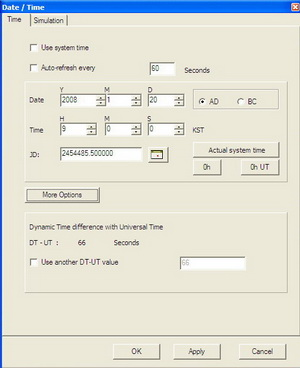
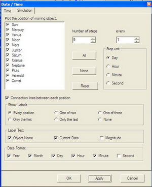
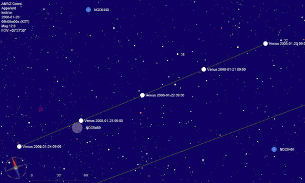

Datum / Tijd
Via het menu: Instellingen → Datum / Tijd.
Je kunt dit dialoogvenster ook oproepen door een klik op het  icoontje van de linker balk, of via Instellingen → Alle configuratie instellingen → Datum / Tijd.
icoontje van de linker balk, of via Instellingen → Alle configuratie instellingen → Datum / Tijd.
Het Datum/Tijd dialoogvenster heeft twee tabs:
Om de objecten op je kaart met een grote nauwkeurigheid weer te geven, moet je ook je geografische positie juist instellen.
Tijd

Via dit dialoogvenster kun je de tijd instellen die jij wilt dat Cartes du Ciel / Sterrenkaarten gebruikt. Om een betrouwbare kaart weer te geven, moet het programma veel berekeningen maken waarin de tijd als parameter vereist is. Vooral voor een acurate weergave van planeten, kometen en planetoïden is de juiste datum en tijd belangrijk. de juiste datum en tijd is ook belangrijk wanneer je op de kaart het Alt-Az coördinatensysteem henbt ingesteld, of wanneer je de zichtbaarheidsgegevens wilt bekijken in het gedetailleerde informatievenster. En misschien wil je in de kaart zelfs de eigenbeweging van de sterren over vele jaren laten afbeelden.
{kind=link}
De checkbox Gebruik systeemtijd
Door in deze checkbox in vinkje te plaatsen zal het programma de systeemtijd van je computer over nemen op het moment dat je het vinkje plaatst. Wanneer je een nieuwe kaart wilt openen, zal het programma voor de nieuwe kaart de tijd hanteren waarop je de kaart opent. Een comfortabele keuze wanneer je jouw kaart de hemel wilt laten weergeven zoals die er op dit moment uitziet.
De tijd en datum handmatig instellen
Je moet een eventueel vinkje weghalen uit de Gebruik systeemtijd wanneer je een kaart wilt laten weergeven in de toekomst of van het verleden.
Je kunt de datum en tijd eenvoudig instellen via de bijbehorende comboboxjes. Het programma kan kaarten berekenen voor data in het bereik van -20.000 tot +20.000 jaar. De berekeningen voor de planeetposities zijn echter beperkt tot het bereik van -3000 tot +3000 jaar. Let wel bij negatieve jaren op: 1 voor Christus is in dit programma 0, en 2 vC is in het programma dus -1. En houdt er rekening mee dat dit programma rekent met de wettelijke tijd (zomer- of wintertijd, niet automatisch UT) zoals die geldt op de ingestelde waarneemlokatie.
Je kunt ook de Juliaanse Dagtijd instellen door het invoergebied of het JD kalender dialoogvenster te gebruiken.
De vaste tijd-knoppen
Huidige systeemtijd: Op het moment dat je deze knop klikt zal het programma de systeemtijd uit de computer overnemen en de actieve kaart met deze tijd herberekenen. Van nu af aan zullen al je nieuw geopende kaarten ook deze tijd hanteren.
00h: Op het moment dat je deze knop klikt zal het programma de tijd van je actieve kaart instellen op 00:00:00 van je lokale tijd. De datum blijft onveranderd. Het programma zal de actieve kaart met deze tijd herberekenen. Van nu af aan zullen al je nieuw geopende kaarten ook deze tijd hanteren.
00h UT: Op het moment dat je deze knop klikt zal het programma de tijd van je actieve kaart instellen op 00:00:00 Universele Tijd (UT). De datum blijft onveranderd. Het programma zal de actieve kaart met deze tijd herberekenen. Van nu af aan zullen al je nieuw geopende kaarten ook deze tijd hanteren.
Het selectievakje "Vernieuw automatisch iedere"
Vink het selectievakje aan wanneer je wilt dat Cartes du Ciel / Sterrenkaarten steeds automatisch de posities van de objecten in de kaart herberekent. Je kunt ook de intervaltijd aanpassen waarna het programma een nieuwe kaart berekent. Houdt in je achterhoofd dat het berekenen van kaarten een behoorlijke belasting geeft van je processor.
Vooral wanneer je de kaart in het Alt-Az coöordinatensysteem gebruikt, heeft het zin om je kaart met enige regelmaat te laten herberekenen. Ook wanneer je bedekkingen, kometen of planetoïden gaat observeren, is het zinvol dat het programma geregeld een nieuwe kaart berekent, ongeacht het gebruikte coöordinatensysteem.
Door een klik op knop Meer opties kun je er voor kiezen of je het verschil dat het programma hanteert tussen de Dynamische Tijd (DT) en de Universele Tijd (UT) wilt veranderen. Dit verschil moet je goed instellen om accurate gegevens te verkrijgen over bedekkingen. Klik hier om meer te lezen over tijdstandaarden.
Simulatie

Cartes du Ciel kan de beweging van Zonnestelsel objecten (Zon, planeten, manen, planetoïden en kometen) over lange tijden laten weergeven op een enkele kaart. Het gedeelte van de banen die de objecten afleggen kan de kaart weergeven als een lijn met de posities op een door jou te kiezen interval.
Je kunt instellen over welke periode van tijd de kaart de baan zal weergeven door de waardes in te stellen via de comboboxjes Aantal stapen, iedere (welke je kunt lezen als stapgrootte of interval) en een Stap eenheid te kiezen. Als je Aantal stappen instelt op 10, iedere instelt op 7 en stap eenheid instelt op dag, dan krijg je de baan en posities van de objecten weergegeven voor de volgende 10 weken vanaf de ingestelde datum en tijd.
Met de radioknoppen kun je kiezen welke Zonnestelsel objecten je wilt weergeven. Ook kun je instellen of -en hoe- je de labels van de objecten wilt weergeven.

{kind=link}
{kind=link}
Datum/Tijd instellingen hebben te maken met:
Kaart coördinatensysteem. Wanneer je de baanbeweging wilt simuleren en je wilt zien hoe de objecten ten opzichte van de horizon zichtbaar zijn op een bepaalde tijd, dan zul je de kaart in moeten stellen op het Alt-Az coördintensyteem. Je kunt dit op verschillende manieren bereiken. bijvoorbeeld via de menubalk Kaart → Kaart coördinaten systeem → Alt-Az Coördinaten
Zonnestelsel Wellicht wil je de beweging van planeten, planetoïden en kometen in welk coördinatensysteem dan ook simuleren. Op verschillende manieren kun je de Zonnestelselobjecten zichtbaar te maken. Bijvoorbeeld via de menubalk: Kaart → Toon objecten en klik “Toon planeten”, “Toon planetoïden” en “Toon kometen”. Of via de snelste manier, door de van toepassing zijnde icoontjes op de objectenbalk in objecten groep B.